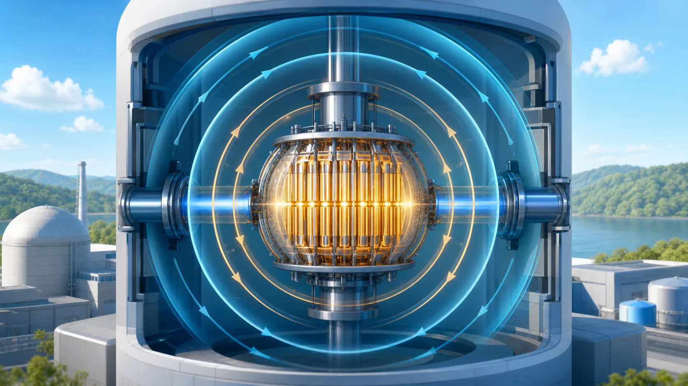
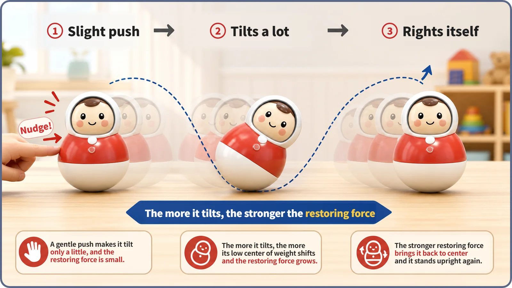
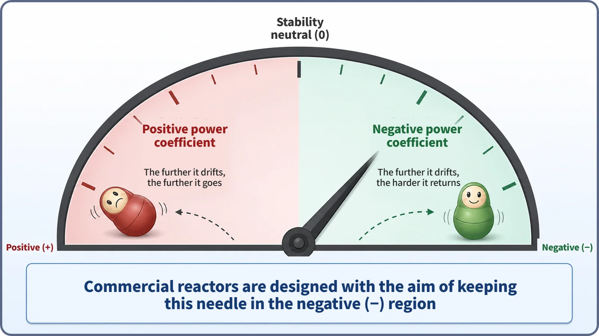

Reactor Kinetics & Reactivity · 125
Push It Over and It Pops Right Back Up — When a Reactor Stabilizes Itself
When the sum of a reactor's feedbacks is negative, any drift in power creates reactivity that pulls it back. A built-in tendency, not a substitute for control and protection systems.

When the sum of a reactor's temperature and density feedbacks, the power coefficient αP, is negative, any drift in power creates reactivity that pushes it back toward balance. In the short form Δρ ≈ αP × ΔP, the condition for self-stabilization is αP < 0. It is a built-in physical tendency that commercial reactors are designed for, not an absolute guarantee and not a substitute for control and protection systems.
Why the sign of one number matters
A reactor has several feedback effects that happen all on their own. Doppler feedback reacts the instant fuel temperature rises; the moderator temperature coefficient shows up more gradually as the water warms; and coolant density changes appear sharply when the coolant boils and forms bubbles. Add all those paths together and you get one number, the power coefficient. That leaves the most important question of all: why does the sign of that single number matter so much?
Push it sideways as hard as you like, and it still stands back up
Remember the roly-poly toy, the weighted wobbly doll many of us played with as children? Push it over as hard as you like, and the moment you let go, it rocks back upright. It even seems that the further you tip it, the harder it tries to stand back up. That works because a heavy weight sits in its base: whenever the body tilts, its center of gravity keeps producing a force in the "stand up straight again" direction. The more it leans, the bigger the force pulling it back.
A reactor has a property that looks a lot like this. If power drifts slightly away from its balance point for any reason, like the toy tipping over, the temperatures and densities inside the reactor change with it. Those changes in turn alter the reactivity (a measure of how far the reactor is from a perfectly balanced, critical state). The real question is the direction of that response. Does it always push back toward where it started, like the roly-poly? Or does it push the reactor further away?

A force that pulls back, or one that pushes further
The power coefficient is the single net coefficient that adds up all the feedback paths: Doppler feedback, the moderator temperature coefficient, coolant density changes and so on. It tells you how much reactivity changes overall when power changes by a small amount.
What if the power coefficient is negative? When power rises a little, the resulting temperature and density changes push reactivity down. Lower reactivity takes the momentum out of the growing neutron population (and therefore power), and power settles near a new balance point instead of drifting further. Just as the roly-poly produces a righting force as big as its tilt, the reactor produces, on its own, reactivity that shrinks the deviation by as much as power has strayed. That is what "the reactor stabilizes itself" actually means.
If the power coefficient is positive, the story is completely different. A small rise in power pushes reactivity up, so the neutron population grows more, and the extra power pushes reactivity up again: each step egging on the next in a vicious circle. A small wobble can grow and run away. For the roly-poly, it would be like a toy with its weight at the top: tip it slightly and over it goes.
So commercial reactors are designed from the start so that the power coefficient is generally negative across their operating range. That is a general design principle commonly targeted for commercial light water reactors, not a claim that it is negative under every conceivable condition without exception. It is not achieved by bolting on another safety device; it comes from how the core itself is built, such as the ratio of fuel to moderator and the fuel arrangement, so that the laws of physics work this way on their own.

The whole idea in one short formula
The relationship fits in one short line:
Δρ ≈ αP × ΔP
Here Δρ is the change in reactivity, ΔP is the change in power, and αP is the power coefficient, the net coefficient combining Doppler, moderator temperature, coolant density and other feedbacks. The condition for self-stabilization is simple: αP must be negative (αP < 0).
| Power change | With αP < 0 | Effect |
|---|---|---|
| Power rises (ΔP > 0) | Reactivity falls (Δρ < 0) | The rise is held back |
| Power falls (ΔP < 0) | Reactivity rises (Δρ > 0) | The fall is resisted |
Whichever way the reactor wobbles, the push always works to shrink the wobble: a restoring force, quite literally. You would almost never use this formula for precise calculation, since the actual size varies considerably with core design and operating conditions. But to see why the sign of the power coefficient gets so much attention, this one short relationship is all you need.
Telling self-stabilization apart from its neighbors
Self-stabilization vs. scram and the protection system. A scram is an active measure: after detecting an abnormal signal, the system rapidly drives the control rods in. Self-stabilization involves no such judgment or intervention; it is a passive tendency created instantly by the physics of temperature and density changes. They do not replace each other; they contribute to safety at different layers.
Self-stabilization vs. shutdown margin. Shutdown margin tells you whether enough negative reactivity is available to shut the reactor down, and it mainly concerns deliberate shutdown means such as control rods. Self-stabilization is about the reactor's tendency to regain balance while it is running at criticality. They deal with different situations.
The power coefficient vs. self-stabilization. The power coefficient is the number itself, the sum of the feedbacks. Self-stabilization is the physical meaning that number carries when its sign is negative: a tendency to regain balance on its own. So this is not a new quantity; it is the answer to why that number matters.
Two common misunderstandings
"With negative feedback, a reactor can never become unstable." Not so. A negative power coefficient is a favorable physical property that helps a reactor regain balance on its own, but it does not guarantee unconditional safety under every operating condition and in every accident. A roly-poly can still be knocked flat by a force far beyond what its weighting was designed for. The accurate way to put it is the careful one: the reactor is designed to behave this way.
"Since the reactor stabilizes itself, control rods and protection systems aren't really needed." Also not so. Self-stabilization is only a built-in physical tendency, and real nuclear plants always have active control and protection systems as well, entirely separate from it. A roly-poly doesn't make a seat belt unnecessary. The two are different layers of safety that work together, not substitutes.
Key takeaways
- When power drifts from its balance point, temperature and density changes alter reactivity; the sum of all that feedback is the power coefficient.
- If the power coefficient is negative (αP < 0), reactivity always acts to shrink the deviation, whether power goes up or down. That is the condition for a reactor to stabilize itself.
- Like a roly-poly that pushes back as hard as it is tipped, a reactor with a negative power coefficient creates reactivity that pulls it back by as much as it has strayed.
- Self-stabilization is a passive tendency built into the physics, on a different layer from active control rods and protection systems, and it is not an absolute guarantee of safety.
- Commercial reactors are designed from the outset so that the power coefficient is generally negative across their operating range.